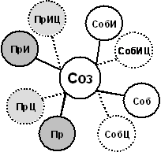

Глава
10. Защита сознания
Сегодняшние поганые государства
не только не собираются бороться с массовым насилием сознания,
но наоборот, охраняют насильников и их права собственности на
захваченное сознание. Сегодня, как и в средние века, мы вынуждены
ходить в защитных латах. Нам всем приходится осваивать своего
рода самбо сознания. Понятие точек привязки удобно
тем, что его легко использования для защиты сознания, для перенесения
на эту область аналогий из военного дела и из компьютерной безопасности. Защита сознания, его приёмы
и способы, ненамного отличаются от защиты окопов, командных центров,
ключевых высот и других объектов. Переносите военные методы на
защиту сознания. Носите каски, стройте блиндажи и укрепрайоны,
организуйте партизанское движение. Основным приёмам защиты следует
обучить каждого школьника так же, как его обучают на уроках начальной
военной подготовки стрельбе из автомата или действиям в случае
ядерного взрыва. Индивидуальная защита сознанияПостроение индивидуальной защитыI.Составление картыКак мы обсуждали в предыдущей
главе, атаку на сознание можно представить как попытку насильственно
изменить исходный набор точек привязки на набор точек привязки,
контролируемый противником. Атака на сознание, особенно
атака на общественное сознание, практически всегда осуществляется
исходя из существующего набора точек привязки, исходя из существующей
системы ценностей. Для того чтобы подготовиться
к обороне, в первую очередь надо хорошо представлять, что включает
защищаемый набор точек привязки, чётко представлять свою собственную
систему ценностей. Надо определить «карту» своего сознания, отметить
высшие точки привязки, выделить «принципы», «святые» понятия,
наиболее высокозаряженные точки. Надо также обозначить второстепенные,
но жизненноважные точки привязки. Особое внимание надо уделить
всему, что находится в оперативной зоне, чем заняты мысли человека
или общества большую часть их времени. *
* * Проведите проверку собственной
оперативной зоны. Выделите те 10-15 наиболее важных объектов,
на которых сосредоточено ваше внимание. При этом не надо углубляться
в психоанализ. Просто посмотрите на себя со стороны, подумайте,
в контакте с какими людьми и предметами вы проводите больше всего
времени, о чём вы чаще всего думаете. Обычно это будут семья, дети,
дом, дача; компьютер, чат в Интернете, рыбалка, пиво, сигареты;
или деньги, автомобиль под окном, свой бизнес, гардероб, карьера
на работе и так далее. Сюда же войдут основные точки, которые
интересуют вас на уровне общества – судьба страны или судьба «демократии»;
а может быть, тусовка в определённом ночном клубе. Определите, какие из этих точек
контролируются другими людьми. Несомненно, что сигареты контролируются
их производителями, карьера – начальником, а «демократия» – средствами
массовой информации. Конечно, ни один человек не
может быть полностью независим от других. Но если в вашей оперативной
зоне преобладают товары и желания приобрести товары – это говорит
об очень высокой степени управляемости. Засечение атакиСледующим шагом построения системы
защиты будет засечение атаки на сознание, засечение попыток ввести
новые точки привязки, попыток изменить связи и заряды существующих. Наиболее важные для вас точки
привязки, карту которых мы составили, могут быть как целью
атаки, так и средством атаки – то есть от них может оттолкнуться
управляющий сознанием. Мы привыкли к открытым атакам,
которые называются пропагандой. Важно научиться засекать скрытые
атаки. Любая
информация должна восприниматься как попытка изменить сознание.
При этом не надо пытаться сразу определить, «правильна» или
«неправильна» эта информация. Вместо
определения «правильности» информации надо определить возможные
результаты её воздействия. Как эта информация изменит ваше
сознание, каким станет конечный набор точке привязки, если
вы «примите» эту информацию. Уже потом, понимая, к чему ведёт
эта информация, следует определять её «правильность» или «неправильность». *
* * При чтении журнала или газеты,
при просмотре телевидения, не следует читать, что пишет
газета, не следует слушать, что говорит комментатор, не следует
смотреть, что показывает телевизор. Следует оценить со стороны,
о чём они говорят, пишут или показывают. 1) Вместо чтения газеты, просмотрите
ключевые темы, слова, понятия, заголовки, фотографии. Проанализируйте
частоту, срочность, длительность упоминания этих тем или понятий;
выделения размером шрифта, местом или цветом. В речи комментатора
дополнительно определите громкость и интонационную выраженность
слов. Определите главные, самые яркие зрительные образы в телепередаче. 2) «Просканируйте» текст на
контекст, на связи, в которых употребляются ключевые точки
привязки, посмотрите на общий заряд слов и зрительных образов,
которые связываются с ключевыми точками. 3) Далее, просмотрите текст
или передачу с точки зрения её общей позиции, мировоззрения.
Определите ту точку в пространстве мира отражений, из которой
автор описывает мир. Проверьте, пытается ли эта информация
атаковать ваши основные точки привязки? *
* * Следующий вопрос, на который
следует дать ответ – кто управляет теми точками привязки,
которые вводятся газетой или телепередачей, кому было бы выгодно
введение этих точек, или уничтожение существующих. Чьё управление
убирается, и чьё вводится? Иными словами, кому будет выгодно
и кому будет невыгодно, чтобы я думал так, как написано в этой
статье или рассказано в телепередаче? *
* * По подобной же системе отслеживаются
компьютерные вирусы. Во-первых, любой кусок компьютерного кода
считается потенциальным вирусом. Во-вторых, в первую очередь отслеживается
не сам код, но возможные атаки на определённые наиболее важные
участки памяти компьютера. В-третьих, коды программ анализируются
на наличие определённых последовательностей, которые могут быть
разрушающими. Механизм защиты на микро-уровнеПочему так важно не читать информацию,
а смотреть на неё со стороны? Почему важна оценка не «правильности»
или «неправильности» информации, а оценка конечного результата? Во-первых,
как мы отмечали во 2-й главе, правильность – это понятие относительное,
оно полностью зависит от точки отсчёта, от выбора веры. Во-вторых,
любая информация – и дезинформация – всегда сочетает «правильную»,
то есть совпадающую с вашей точкой зрения информацию, и «неправильную»,
то есть уводящую вас в контролируемую противником область точек
привязки. На этом сочетании «правильного» и «неправильного» и
основан весь процесс изменения сознания. Степень совпадения обычно сильно
недооценивается. Средний текст любой, даже самой «вражеской» газеты
на 90 процентов будет совпадать с вашим сознанием. Если вы хотите,
для сравнения, прочитать текст, который бы не совпадал бы с вашей
точкой зрения, возьмите арабскую вязь или иероглифы. Как мы отмечали во 2-й главе,
точки привязки сознания являются общими точками, через которые
осуществляется общение сознаний отдельных людей между собой. Мы можем сказать, что слова родного языка,
привычные изображения, знакомые всем звуки являются сигналами,
которые открывают канал прямой связи между сознаниями людей –
ибо они созданы для этого. Открытие происходит помимо воли человека
и может даже не осознаваться им
[395]
. Оно происходит и в фоновом режиме, когда выключено
активное восприятие. *
* * Чтобы защититься от насилия,
надо охранять входы в эти каналы так же, как мы охраняем двери
в дом, ворота в замок или проезд через границу. Поэтому для защиты важно не
«входить» в точки автора, не думать ими, а думать об
этих точках, подойти к ним, но смотреть на них сбоку. Не следовать
мысли человека, но думать о том, что он говорит. Разные языки – русский, английский,
немецкий – выполняют функцию защитных фильтров, которые не дают
сознаниям людей, принадлежащих к разным народам, установить прямые
каналы. Акцент, произношение в языке – это сигналы опасности. Чтобы получить преимущество
– говори на языке противника и не давай противнику говорить на
твоём языке. Но никогда не думай на языке противника. Всегда
переводи его язык в свои понятия и думай на своём языке. Перевод
будет постоянным фильтром, комнатой стерилизации, которые будет
прикрывать вход в твоё сознание. Наоборот, остерегайся и избегай
противника, который говорит на твоём языке. Это же относится к языку науки
и к языку «логий» (социологии, политологии и прочих религиозных
инструментов, пытающихся выглядеть как объективные науки). Это
относится к чужим и заимствованным словам в повседневном языке.
Не используйте понятия логий как свои; избегайте иностранных слов
в родном языке. Горе тому народу, чьи каналы
массового доступа к сознанию – телевидение, пресса, радио – захвачены
врагами, которые говорят на языке этого народа. *
* * То, что относится к языку, относится
и к телевидению. С одной стороны кажется, что это просто картинка.
Но по осознанному или неосознанному эффекту – сознание часто не
может отличить картинку от реальности. Знакомые или завораживающие
изображения на экране открывают прямой доступ в сознание. То, что показывают по телевизору,
воздействует на сознание так, словно действие происходит в вашей
комнате. Реклама еды – это еда перед вашим носом, актёры и ведущие
– это люди в вашем доме, они нагло вваливаются к вам на несколько
часов и агитируют вас в направлении того, что выгодно им. Убийства
на экране – это убийства в вашей комнате. Защитой от этого является максимальное
отключение сопереживания, отключение от участия в событиях. Глядя
на телевизор, представьте, что вы заглядываете в комнату, в которой
сидят чужие, вы слушаете, о чём они говорят, делаете свои выводы.
Но вы не входите в эту комнату, вы не часть её. II.Работа с каналамиКак мы обсуждали в предыдущей
главе, управление сознанием строится на управлении отражением,
на управлении тем, куда и как смотрит человек, и
что он видит. Соответственно, защита сознания включает
защиту от этих трёх составляющих управления. Первый компонент защиты (куда
смотрит человек) – работа с каналами и с источниками информации. Работу
с каналами и источниками можно свести к следующим шагам: 1.
Определить и отсечь искажающие и создающие насилие каналы. Следует
выявить каналы, которые заведомо и сильно искажают информацию
или агрессивно атакуют сознание, и резко ограничить их использование.
Они представляют интерес только для изучения методов насилия. В
повседневной жизни, например, это означает сведение просмотра
телевизора в целом, и рекламы в частности, к абсолютному минимуму. 2.
Определить и отсечь пустые и мусорные каналы. Канал
может не искажать информацию и не атаковать сознание, но вместо
этого забивать сознание мусором, бессмысленной информацией. К
этой категории относится, в первую очередь, всевозможная информация
о культах – знаменитостях, спорте, моде и так далее. Эти каналы
представляют интерес только для анализа самих культов. К
мусорным каналам относятся и всевозможные «науки» вроде философии
модерна, экзистенционализма, феминизма и так далее. 3.
Производить сравнение отражений объекта, получаемых из разных
каналов. К
информации, получаемой из любого канала, следует относиться как
к одному из многих возможных отражений объекта. Надо
понимать, что это не пассивное отражение, а активное, то
есть канал сознательно формирует это отражение в нашем сознании.
Смотрите на отражение в канале не как на то, что показывает канал,
а как на то, что он хочет, чтобы мы увидели (с целью изменить
наше сознание)
[396]
. В
одном канале практически всегда можно создать непротиворечивое
отражение. Чтобы восстановить реальную картину, следует сравнивать
отражения, создаваемые объектом в различных источниках и каналах.
Целью сравнения является нахождение противоречивости между разными
отражениями, между разными каналами, между образами, которые объект
хочет внедрить в сознание разных людей. Например,
при анализе корпорации следует сравнить отражения, которые она
формирует (1) для своих потребителей, (2) для своих инвесторов
и (3) для своих партнёров по бизнесу. Поскольку интересы всех
трёх групп прямо противоположны (инвесторы – получить прибыль,
потребители – заплатить поменьше, партнёры – получить прибыль
с потребителей и инвесторов, но не дать «подоить» себя), то в
отражениях неизбежно будут противоречия
[397]
. Другой
пример – сравнение отражений, которые создаёт Арье Каплан для
гоев и для своих. Чем
больше каналов и источников используется, тем выше шанс определить
достоверность (соответственно, контрприёмом будет заведомое создание
дополнительных ложных каналов). Можно и нужно использовать не
только каналы настоящего, но и каналы прошлого – представлять
ситуацию с точки зрения авторов прошлого, в перспективе истории. Следует
искать все возможные места, где система может отбросить отражение
(«наследить»). Следует
и постоянно искать выход из привычной среды общения. Любая среда
всегда страдает самообразующейся однобокостью. Кроме того, мнение
среды может заведомо формироваться – инструментами маркетинга
или иными. Методы анализа информацииВторой компонент защиты (как
смотрит человек) – применение разных подходов, методов и моделей
к анализу одного и того же объекта. Возможности любого подхода,
любой модели отразить объект (или отразить отражение объекта)
– и выявить противоречия – ограничены. Чем разнообразнее применяемые
модели, тем выше шанс увидеть разные стороны объекта. В частности, не следует считать
научные и числовые модели единственно правильными. Следует использовать
оценку с религиозных, художественных, военных и даже с фантастических
позиций. *
* * Следующий шаг – выявление всех
связей между объектами. В управлении отражением постоянно
используется приём концентрации внимания только на одной связи,
которая действительно существует. Но при этом откидываются все
остальные связи, которых может быть гораздо больше. Например, как мы отмечали, одним
из способов уничтожения сознания является замыкание точек привязки
с противоположными зарядами. Похож ли фашизм на коммунизм? Можно
найти сходства. Являются ли коммунизм и христианство противоположностями?
Можно найти различия. Часто первая увиденная связь
поражает человека. Он останавливается и решает, что эти понятия
одинаковы (особенно, если каналы сосредотачиваются только на показе
этой связи). Чтобы защититься от замыканий, можно представить
себе следующую картину. Изобразите два понятия, связи между которыми
вы анализируете, как две точки в пространстве. Всегда можно найти
множество третьих точек в пространстве, из которой будет наблюдаться
полное совпадение отражений любых двух понятий – поскольку
через любые две точки пространства можно провести прямую линию
[398]
. С другой стороны, если вы расположитесь между
двумя анализируемыми точками, то как бы они не были близки в реальности,
эти точки покажутся прямо противоположными
[399]
. Какой выход из этой ситуации?
Чтобы узнать, насколько на самом деле связаны анализируемые точки,
нужно «облететь» их со всех сторон. Надо также найти другие точки,
которые связаны с анализируемыми, и сравнить, связаны ли эти вторичные
точки между собой. Совместить отражения набора точек гораздо
сложнее. $
Возьмите два любых объекта и найдите в них схожее. Возьмите два
совершенно противоположных понятия и найдите в них сходства. Затем
возьмите два синонима и найдите много отличий. Одним из приёмов управления
является связывание понятий разного уровня абстракции.
Например, конкретный эпизод на войне и ход всей войны в целом;
внешний вид человека и политика государства; тысяча долларов,
потраченных на благотворительность, и деятельность корпорации
в целом. Отслеживайте отражения на наличие таких связей разного
уровня абстракции. *
* * Безусловно, что не всякую информацию
следует откидывать – иначе сознание не сможет меняться, но застынет
на месте, как это во многом произошло в средние века. Чтобы
определить правильность информации, можно использовать следующие
подходы, о которых мы уже упоминали в этой книге:
–
анализ логики и причин,
–
многоэкранную схему мышления,
–
постоянное сопоставление с существующей системой
знаний,
–
поиск диалектических противоречий (они есть всегда;
если их нет – это говорит о фиктивности отражения). Следует также постоянно проводить
отрицание отрицания полученных фактов – оспаривать собственные
выводы и собственные методы. *
* * Для защиты от управления прошлым,
от связывания понятий, которые расположены в различных точках
времени, можно использовать следующие подходы:
§
Исходить из оценки событий современниками, а не
из будущего. Например,
при оценке России начала XX
века – исходить из документов тех лет, а не из сегодняшних представлений
о том, как оно должно было быть, или как нам хотелось, чтобы оно
было. Например, исходить из свидетельств Льва Толстого.
§
Оценивать события истории в развитии, как участок
линии, а не как вырванный кусок или факт. Никто
не осуждает Петра I
за то, что он стриг бороды боярам и переливал церковные колокола
на пушки; но эпоху 1930-х годов осуждают за аналогичные жёсткие
меры.
§
Не связывать понятия из прошлого и понятия из настоящего,
или понятия из разных периодов прошлого, даже если они звучат
одинаково. Царь
XV века, царь
XVIII века и царь
XX века хотя и
были похожи, это были очень разные цари. Современные коммунисты,
коммунисты 1920-х и 1980-х годов – это разные коммунисты. Эти методы хорошо известны в
науке. Особенность их применения для защиты сознания в том, что
происходит активное вмешательство противника. Способы защиты от
такого вмешательства мы рассмотрим ниже. Работа с готовыми отражениямиТретий
компонент защиты (что видит человек) – работа с языком
отражения. Для
защиты сознания при анализе готовых отражений следует заменять
язык этих отражений. В первую очередь, это фильтрация
и откидывание модных, ярких и сильных слов и псевдослов, особенно
имеющих эмоциональную окраску. Также следует отфильтровывать яркие
картинки, громкие и резкие звуки. Обратите внимание и на искусственно
повторяющиеся и циклически употребляемые слова или сочетания. Следующий шаг – отфильтровывание
всевозможных явных и неявных указаний к действию и задание желаний
(«сделай то-то», «ты хочешь», «это твоя мечта», «это будущее»,
«вы отстали», «так делают современные люди», «ты этого достоин»,
«способен ли ты добиться успеха» и так далее). Необходимо также отфильтровывать
как примитивные, так и искусственно сложные, заумные слова и модели. Наилучший метод – замена слов их функциональными
аналогами
[400]
или перевод их в понятия своего внутреннего языка.
Изображения лучше заменять схемами, звук – текстом. Песочный ящик и Резервная копияАтака на сознание часто использует сложные
и многоходовые комбинации. Например, на первом шаге в оперативную
зону будет введена безобидная точка привязки, а уже на втором
шаге, когда эта безобидная точка устоится, от неё будет добавлена
контролируемая точка
[401]
. Более того, при анализе сложных
явлений невозможно заранее определить, каким будет конечный результат,
определить, как новая информация в конечном счёте изменит сознание.
Только после множества рассуждений и дополнительных сведений становится
понятной истинная картина. В науке в таких случаях используют
механизм выдвижения гипотезы и её анализа. Этот же приём можно
использовать для защиты сознания. Можно рассматривать информацию,
получаемую из канала, как гипотезу. Но для этой гипотезы в своём
сознании следует отвести особое место, изолированное от остального
сознания. В программировании используется
термин песочного ящика (sand
box), специальной
оболочки, в которую помещается любая неизвестная программа. Этой
программе разрешена работа, но в случае попытки доступиться к
важным участкам памяти, программа будет уничтожена вместе с песочным
ящиком. Таким образом, она не изменит содержание системы. В медицине аналогией песочного
ящика будет карантин для прибывающих из неизвестной местности.
Только убедившись в отсутствии заразы, их выпустят в общество.
Точно также необходим песочный ящик и карантин для любой информации. *
* * Несмотря на все меры защиты,
иногда вирусная программа всё-таки пробивает защиту песочного
ящика и другие уровни защиты, и производит сильные разрушения
в системе. В таком случае используется
откат к резервной копии, восстановление с копии того последнего
момента, когда была известна работоспособность системы. В науке, когда гипотеза оказалась
ложной, возвращаются к существующей теории. Нечто подобное происходит и
в обществе. Когда новые идеи доказывают свою несостоятельность,
происходит попытка вернуться к старой, проверенной копии общественного
сознания. Сегодня одна часть русского общества пытается откатиться
к резервной копии 1916 года, другая часть – к копии 1952 года,
третья часть – к копии 1984 года. К сожалению, срок годности резервной
копии ограничен. Поскольку мир меняется очень быстро, то чем старее
резервная копия, тем она менее будет работоспособна в изменившихся
условиях. Особенности защиты сознания в религии денегКак мы отмечали, религия денег
добилась особых успехов в развитии технологий массового насилия
сознания. Рассмотрим особенности защиты индивидуального сознания
от её методов. *
* * Защита от создания Страха,
Неопределённости, Сомнения (FUD). Одним из главных инструментов
насилия является создание ощущения постоянного Страха, Неопределённости,
Сомнения (по-английски Fear,
Uncertainty, Doubt
или FUD). Этот приём постоянно используется
как на уровне борьбы между товарами отдельных фирм, так и между
государствами. С товарами конкурента или с чужой страной должны
ассоциироваться Страх, Неопределённость, Сомнение. Со своими товарами
или с метрополией – превосходство, определённость и уверенность;
человек должен хвататься за них как за спасительные соломинки. Защита проста – надо засекать
попытки создания страха, неопределённости, сомнения и не поддаваться
им. Никогда не бойтесь. Страх делает из вас лёгкую жертву. *
* * Защита от введения товаров. Защита от функциональных
товаров. Не вырабатывайте любви к определённой вещи, не придавайте
вещам в целом большого значения. Заменяйте необходимые вещи аналогами.
В принципе, чем меньше товаров – тем меньше проблем. Защита от товаров удовольствия.
Соотносите удовольствия и последствия, помните, что удовольствия
всегда раздуты и завышены, ищите негативные стороны в товарах. Для защиты от товаров удовольствия надо уметь
сдерживаться и управлять своими желаниями. В общем-то, всё христианское
воспитание личности направлено на формирование этого умения
[402]
. В такой защите важно периодически
выходить из круга, разбивать привычный ход дел, вводить элемент
случайности в свои действия и поступки. Помните, что товары удовольствия
– это не более чем фиктивные картинки и контролируемые точки общения.
Ищите другие удовольствия, не связанные с товарами. Общайтесь
напрямую, без товаров. Защита от товаров статуса.
Помните, что вся «цена» товаров статуса – в неравенстве, они есть
индикаторы положения человека в воображаемой иерархии. Если вы
не признаёте идола, не признаёте иерархию, эти товары теряют смысл. Воспринимайте статусные товары
как показатель принадлежности их обладателя к поганому сознанию. И, наконец, разделяйте цены
и ценности. Радуйтесь тому, что нельзя купить и продать,
радуйтесь независимо от стоимости. Цена – это не более чем отражение
в глазах идола. Не смотрите на мир его глазами. *
* * Защита от превращения человека
в товар. Религия денег хочет вывернуть
наше сознание, хочет заставить нас смотреть на себя как на товар,
стоимость которого определяется другими. Она хочет все наши действия
подчинить тому, чтобы набивать себе цену в глазах других, «работать
на публику», а на самом деле – на идола. Не поступайте как все
только потому, что так поступают все. Никогда не стремитесь понравиться
поганому, не ищите его одобрения или неодобрения, не ищите его
оценки, не сравнивайте себя с ним. Оценивайте его и презирайте
его. Это относится как к поганым людям, так и к поганым странам. Не имеет значения, сколько побрякушек
поганый на себя навесил, в какую машину он сел, и сколько рабов
на него работает. Его власть – только в вашем подчинении его силе,
в вашем признании того, что обладание побрякушкой даёт какое-то
преимущество перед другими. Религия денег сознательно создаёт
массовые комплексы «неполноценности». Сама суть понятия «неполноценности»
– это отражение в чужих глазах. Это соответствие неким стандартам,
которые задал тот, кто хочет таким образом подчинить людей себе. Поэтому любую попытку использования
«неполноценности» надо рассматривать просто как попытку насилия.
Неполноценных людей не бывает, само понятие неполноценности лишено
смысла. Защита от двойного сознанияI.Понимание двойного сознанияМногие методы защиты сознания,
которые мы описали, применялись в течение тысячелетий. К сожалению,
методы насилия тоже постоянно развивались. Как мы отмечали в 5-й главе,
поганые выработали особую двойную, двухслойную форму сознания.
Это двойное сознание начинается с необходимости купца держать
в голове две стоимости одного и того же товара – ту, по которой
он купил сам, и ту, в которой он убеждает покупателя. Постепенно эта двойственность распространилась
на все сферы жизни поганых. Поганые автоматически держат в сознании
два набора точек привязки – один внешний для создания фиктивного
отражения, своего образа; и второй внутренний, их собственный,
настоящий
[403]
.
*
* * Почему надо хорошо понимать,
как устроено сознание поганого, сознание английского лорда, сознание
преуспевающего бизнесмена, сознание Арье Каплана? Если не понимать сознания паразитов
и не защищаться от них, они будут управлять нашим сознанием (что
они и делают с русским обществом в настоящее время
). Во-первых, они агрессивны. Во-вторых,
они уже настолько освоили методы проникновения в сознание, что
от них невозможно защититься простой блокировкой. Не понимая их
двойственности, мы будем принимать отражение, которое они создают,
за реальность. Двухслойное сознание имеет преимущество
перед однослойным точно так же, как два танка или два самолёта
имеют преимущество перед одним, как две линии траншей – перед
одной. Борьба с паразитом сознания
строится на тех же принципах, как и борьба с биологическим паразитом,
с глистом или с клопом. Сначала надо изучить их поведение, их
повадки. Только понимая на 100 процентов
сознание противника, можно предсказать его, контролировать его,
отличать отражение от его сути, предотвращать собственные разрушения
и бороться с ним. *
* * Сознание паразита, основанное
на получении удовольствия от насилия, постоянно совершенствует
свои формы и методы. Одно из заблуждений христианства состоит
в том, что оно не видит развития дьявола, не отслеживает этих
изменений. Нельзя защититься от противника,
только исходя из своих собственных представлений о нём, или исходя
из представлений о том, каким он был в прошлом. Надо понять, как
в данный момент мыслит поганое сознание. Надо войти в его, надо
исследовать его внутреннюю логику. Изучая отражения, которые создаёт поганое сознание,
находя противоречия между ними, надо восстанавливать его образ
мыслей. Надо пытаться понять, как должен был думать поганый, чтобы
сделать так, как он сделал, или сказать так, как он сказал. Надо
воспроизвести выражение его лица
[404]
, повторить его слова, представить себя на его месте,
пройти по его следам. Надо создать у себя, в своём сознании копию
этого враждебного сознания. Надо построить его модель, сэмулировать
его поведение
[405]
. При этом нельзя стать им самим. Противостояние двойного и человеческого сознанияПри противостоянии поганого
и человеческого сознания мы наблюдаем следующую картину:
Чёрным слоем поганые анализируют
сознание человека. Белый слой – это проецируемый ими собственный
образ добра. Между собой поганые общаются
напрямую на чёрном слое, или через белый слой; но во втором случае
они прекрасно знают о существовании друг у друга чёрного слоя. *
* * Приведём пример из повседневной жизни. Допустим,
вы пришли к дилеру покупать автомобиль и пытаетесь получить скидку
[406]
. В противоборстве, то есть в
торге, участвуют три цены. Первая
цена – цена автомобиля по каталогу, она всегда специально завышена
на 10-30 процентов, чтобы дать некоторую свободу дилеру. Допустим,
это 10 000. Будучи человеком простым и гордым,
вы можете заплатить эту цену, не сопротивляясь. В конечном счете,
автомобиль – просто кусок железа, нет смысла из-за него портить
нервы. Поганый достигнет своей цели
и наживётся на вас. Так поступают не только автомобильные дилеры,
но и все торгаши, и все страны Орды по отношению к колониям. Чем
меньше они встречают сопротивления, тем им лучше. Вторая
цена – это та, которую предлагаете заплатить вы. Например, 8 850. Третьяцена – та
небольшая скидка, на которую согласен дилер, увидев, что вы не
купите за полную сумму. Например, 9 874.50
[407]
. Начинается торг. Ваша цель –
отстоять своё предложение, цель дилера – подвинуть вас как можно
ближе к своей цене. *
* * Естественно, что у дилера в
голове есть ещё и четвёртая цифра – минимальная цена, при которой
он всё-таки получит прибыль. Например, 8 700 долл. Слои сознания выглядят следующим
образом:
Текущая задача дилера – всеми
силами убедить вас, что он никак не может опуститься ниже 9 874.50.
Чтобы обмануть, он должен абсолютно поверить, вжиться в эту цифру,
расхваливать товар и обрабатывать вас с пылом и жаром. Если он
сам не будет верить в 9 874.50, он не сможет и вас убедить. Поэтому дилер использует верхний
«белый» слой своего сознания для формирования у вас отражения,
а свой нижний «чёрный» слой – для контроля этого отражения и
для контроля вашего сознания. Для считывания ваших эмоций, для
вычисления пятой цифры – той максимальной цены, которую
вы внутренне готовы заплатить. Его цель – максимально увеличить
эту пятую цифру. Если у вас один слой сознания,
то третья и пятая цифра совпадают, и дилеру очень легко привести
вас к своей цифре, ибо он видит вас «насквозь». Если в продаже участвуют два
сэйлсмена, то они поддерживают верхними слоями друг друга, но
и на чёрном слое они тоже прекрасно понимают один другого. *
* * Как защититься в такой ситуации?
Если вы не введёте второй слой сознания – вы обречены на проигрыш. Если вы введёте второй слой,
то вы сами станете похожим на поганого. Обладание автомобилем
станет вашей главной целью, из железяки он превратится в объект
желания, ради которого вы обманываете другого человека. Чёрный
слой станет вашим главным слоем. В принципе, на постепенном создании
у человека второго чёрного слоя, на постепенном внедрении в сознание
идеи выгоды от обмана, основана общая тактика втягивания людей
в поганую веру, обучение их рынку, коммерции и так далее. Человек
невольно вводит второй слой для защиты первого – и перерождается. *
* * Даже на войне ситуация проще.
Там у врага – открытый чёрный слой, человек просто достраивает
сверху на свой белый слой чёрный, защитный, и начинает убивать
в ответ на агрессию. Нередко нормальные люди, чувствуя
двухслойность, понимая, что их обманывают, но не желая сами становиться
погаными, вводят чёрный слой сверху – как на войне. Они становятся
внешне злыми, агрессивными, хотя внутри остаются нормальными.
Безусловно, что такая ответная
реакция только вредит нормальному человеку. Он начинают восприниматься
остальными «однослойными» людьми как злой. Он внешне выглядит
хуже, чем поганый, который по-прежнему проецирует ангельский образ.
И только иногда, когда с поганого по какой-то причине спадает
маска, становится очевидным, что это зло породило ответное зло. Введение трёхслойного сознанияВыход из этой ситуации – введение
трёхслойного сознания. Надо словно разделить свой белый слой на
две части и ввести между ними чёрный.
Теперь чёрный слой будет следить
за собственным отражением и за поведением дилера, но нижний белый
слой будет контролировать чёрный. Эта конструкция будет устойчива,
поскольку верхнее отражение и суть будут почти одинаковы. Как
только торг будет закончен, чёрный слой надо изъять, и автомобиль
будет опять просто железкой, а не целью жизни. Но на время противостояния чёрный
слой совершенно необходим – надо сильно желать нанести урон противнику
в ответ на его насилие. Если такое желание возникнет в единственном
белом слое, этот слой просто разрушится, превратится в чёрный.
Если же желание будет недостаточно сильно, вы не сможете создать
достоверный образ, и поганый легко «раскроет ваши карты». Мы рассмотрели введение многослойной
защиты на примере одной точки привязки – цены автомобиля. В реальной
борьбе с погаными в каждом слое создаются целые наборы точек привязки. Хорошей моделью ситуации столкновения
двухслойных сознаний является игра в карты, и, в частности, в
покер, особенно, если несколько игроков находятся в сговоре. Конечно,
«белой» цели в игре в покер не существует. *
* * Приведём некоторые примеры разнослойных
сознаний:
II.Защита от присоединения – ведения – измененияПоганые постоянно используют
приём присоединения – ведения – изменения, о котором мы говорили
в предыдущей главе. Существует несколько способов защиты от него. *
* * Во-первых,
это сбивание в пространстве. Вместо того чтобы читать статью
или книгу с начала, начните читать с конца. Начните читать с выводов,
а не с исходных положений. Потом вернитесь в начало и проследите,
как автор пытается подвести к этим выводам. *
* * Во-вторых, это сбивание во
времени. Во время и сразу после просмотра
передачи или чтения статьи, отложите формирование своего мнения
о том, что говорит автор. Когда пройдёт даже небольшое время,
сила присоединения и внушения резко ослабится. При покупках тех же автомобилей
это означает – никогда не покупайте в первый же день и не покупайте
немедленно после разговора с продавцом. *
* * В-третьих, это сбивание в
структуре. Специально вводите алогичное
мышление, мышление «юзом», вводите элемент случайности. Перепрыгивайте
с точки на точку, неожиданно обращайтесь к другим, самым фантастическим
источникам. Это и вам даст свежие идеи, и собьет все наводки противника. Создание эшелонированной защитыДля дальнейшей защиты целесообразно
создание эшелонированной обороны точек привязки в полной аналогии
с обороной военных целей. *
* * Во-первых,
следует использовать оборону вглубь – по мере того, как
будут разбиваться одни ваши доводы, следует откатываться на следующий,
заранее подготовленный рубеж. Чем больше таких рубежей будет построено,
тем устойчивее будет ваше сознание. На простейшем примере торга
за автомобиль, следует задать целую последовательность цен, например,
с разницей в 50, и каждый раз отступать только на один шаг, но
никогда не пропускать противника сразу на 200 или 300. Надо делать
так, чтобы взятие каждого нового рубежа требовало всё больше сил
противника. Построение обороны вглубь относится
как к аргументам, используемым в споре с противником (к верхнему
слою сознания), так и к вашим внутренним соображениям, которые
вы не высказываете вслух (к внутреннему слою сознания). Внутренние соображения тоже
должны быть выстроены в систему. Следует учесть, что противник
предполагает наличие у вас внутренней системы обороны. Он будет
пытаться понять её и разбить. Поэтому, при откате на новый рубеж
внутренней обороны, вы должны сбивать у противника впечатление
о том, что происходит у вас внутри. Продумайте, какие контрдоводы
можно использовать против каждого уровня вашей внешней и внутренней
защиты и подумайте, как вы будете отвечать на них. *
* * Во-вторых,
следует использовать тактику горизонтальной обороны и создания
набора ложных целей. Следует создать несколько точек привязки,
якобы важных для вас, но на самом деле не имеющих никакого значения. Надо заставить противника с
трудом добывать информацию об этих псевдо-целях, при этом надо,
чтобы он думал, что цели настоящие. Решив, что они важны для вас,
он либо попробует их уничтожить, либо попробует через них войти
в ваше сознание. В любом случае вы получите преимущество.
Во-первых, противник будет тратить энергию, а вы получите время
на размышление. Во-вторых, поскольку эти точки не представляют
для вас большого интереса, вы сможете спокойно наблюдать за действиями
противника и хорошо изучите его. На примере покупки автомобиля дайте продавцу
«вытянуть» из вас, что, например, вам важна та или иная характеристика
в автомобиле, скажем, большой багажник или наличие круиз-контроля
[408]
. Посмотрите, как продавец начнёт пытаться войти
в ваше сознание через эти точки привязки, как он начнёт атаковать
их. Те же приёмы используются в
бизнес-контрактах и переговорах, когда в первый вариант соглашения
или контракта заведомо закладывается множество второстепенных
или не имеющих значения условий, которыми можно пожертвовать в
дальнейшем обсуждении, при этом добиваясь уступок в других, более
важных пунктах. III.Структура сложной защиты от двойного сознанияКонечной целью противников является
перехват управления друг другом. Надо создать у противника впечатление,
что он присоединился и ведёт вас, но на самом деле этим присоединением
надо вести его. Поэтому борьба с многослойным
сознанием требует построения довольно сложной защитной структуры.
Сознание должно держать:
§
Пр – копию (отражение)
сознания противника для собственного употребления; эта копия должна
быть как можно ближе к оригиналу.
§
ПрИ – искажённую копию
нашей копии сознания противника для самого противника; то есть
то, как мы хотим, чтобы противник думал, как мы видим его.
§
СобИ – искажённую
копию нашего собственного сознания для противника; это тот образ
себя, который мы создаём у противника.
§
Соб – копию собственного
сознания для собственного употребления; эта копия должна максимально
соответствовать оригиналу, и она необходима для самооценки.
§
Соз – собственно сознание. *
* * Например, рассмотрим сознание
воюющей армии и всего одну точку привязки – количество потерь: Пр
– наши знания о реальном количестве потерь противника, ПрИ
– наши заявления об известном нам количестве потерь противника, СобИ
– наши заявления о собственных потерях, Соб
– наши знания о реальных собственных потерях, Соз
– реальные собственные потери (о которых мы можем и не знать).
Пр
– наши знания о реальном количестве танков противника, ПрИ
– наша дезинформация об известном нам количестве танков противника, СобИ
– наша дезинформация о количестве собственных танков, Соб
– наши реальные знания о количестве собственных танков, Соз
– реальное количество собственных танков (которое может и не совпадать
с нашими знаниями о них).
Пр
– минимальная цена, при которой дилер получит прибыль (8 700), ПрИ
– текущая цена предложения дилера (9 874.50), СобИ
– текущая цена нашего предложения (8 850), Соб
– предел, который вы установили для себя как максимальную цену,
на которую вы согласитесь (9 250, ибо эту цену вы уже выторговали
у его конкурента), Соз
– в данном случае должно совпадать с Соб, поскольку это
полностью управляемая ситуация. *
* * Обе противоборствующие стороны
выстраивают такую структуру из пяти копий, поэтому в идеале копия
сознания противника Пр и копия собственного сознания Соб
тоже должны отражать наличие такой структуры. При сложной борьбе противник
подразумевает наличие у вас многослойности, и ожидает, что вы
ищите многослойность у него. Поэтому и ПрИ, и СобИ
будут иметь внутреннюю многослойность.
Поскольку при этом возникает
бесконечная вложенность, то есть элементы внутри модели должны
отражать сами себя, то на практике возможно отражение только двух-трёх
уровней вложенности. Перехват управленияПоскольку конечной целью является
изменение сознания противника, то в этой структуре возникает
четыре дополнительных элемента. Для каждого из Пр, ПрИ, СобИ и
Соб надо держать не только их текущее состояние, но и целевое
(Ц), желаемое.

Изменяя СобИ в СобИЦ,
ПрИ в ПрИЦ, мы пытаемся так изменить сознание противника,
чтобы оно приняло форму ПрЦ, при этом наше самоосознание
изменяется в СобЦ. Например, мы делаем вид, что
организуем наступление в точке А (СобИ в СобИЦ),
при этом делаем вид, что не замечаем приготовлений противника
по отражению этого наступления (ПрИ в ПрИЦ). В результате
противник меняет своё сознание (Пр в ПрЦ). В реальности
мы готовим наступление в точке Б (Соб в СобЦ). *
* * Пример на уровне автомобиля. ПрЦ
– это цена, которую мы пытаемся установить в сознании дилера как
максимальную цену, выше которой он от нас не получит (например,
8 850). Для этого через изменение СобИ в СобИЦ мы
показываем, что если цена выходит за рамки 8 850, мы готовы всё
бросить и уйти. Одновременно, меняя ПрИ
в ПрИЦ, мы не показываем ему, что знаем его реальную цену
(8 700). Наоборот, мы показываем, что верим ему, что он делает
большое одолжение, отдавая нам автомобиль за 8 850. Это создаёт
у дилера ощущение, что он победил, ибо он всё равно получил прибыль,
а с нас больше не возьмёшь. Одновременно наша Соб
должна иметь запасную СобЦ (8 900), чтобы сделать следующий
шаг, если дилер не поддастся на наши манёвры (ведь в конечном
счёте всё, что ниже 9 250, выгодно для нас). *
* * Эта система будет усложняться
по мере появления третьих участников, для каждого из которых придётся
создавать копию их сознания и искажённую копию. Иногда придётся создавать несколько
искажённых копий третьего участника – свою для разных противников. Структурные проблемы сложной защитыДевяти-узловая структура работает,
если мы имеем агрессивное двухслойное сознание. Если мы
имеем обороняющееся сознание, то необходимо введение третьего
слоя. Как мы отмечали выше, бороться с противником и сбивать его
отражение методами добра невозможно, но при этом надо сохранить
то, ради чего затевается вся оборона.
Как видим, это сложная конструкция.
Существует несколько принципиальных проблем:
§
Есть постоянная угроза превращения чёрного защитного слоя
в суть системы
[409]
. Такое превращение несомненно бы упростило систему.
Есть и угроза восприятия защитного слоя как сути системы
[410]
.
§
Поскольку создание собственного отражения Соб менее срочно
для защиты, чем создание отражений противника Пр и для
противника ПрИ и СобИ, и в силу недостатка ресурсов,
такая система всегда жертвует созданием собственного отражения.
Тем более что Соб должно включать все 13 узлов. Поскольку
агрессивная система проще, у неё и проблемы на порядок меньше.
Плохое Соб ведёт к непониманию системой самой себя
[411]
.
§
Как следствие из предыдущего пункта, Соб и СобИ
начинают совпадать. Соб и СобИ могут также совпасть
из-за того, что Соб сознательно не сообщается всем своим
участникам системы, чтобы исключить попадание информации к противнику.
Искренняя критика в таком случае часто воспринимается только как
попытка «принизить», исказить создаваемый системой образ
[412]
.
§
Не имея хорошего Соб, система начинает использовать для
понимания самой себя искажённый образ себя, созданный противником
– ПрИпротивника
[413]
. Это и является конечной целью противника. Тогда
система думает, что она действует в своих интересах, но ведётся
противником в его целям. Она двигается в направлении ПрЦпротивника,
хотя сама считает, что двигается к СобЦ. СобЦ на самом
деле задаётся через ПрИЦпротивника
[414]
.
§
Исходя из принципа присоединения – ведения – изменения, у противника
следует создать впечатление, что ты сам очень похож на него, но
только ты лучше и сильнее. Поэтому СобИ системы сильно
приближается к своему Пр и к Собпротивника
противоположной системы
[415]
. *
* * Как мы видим, переход от однослойного
сознания к двухслойному порождает скачок в сложности системы.
Мы описали минимально работоспособные конструкции, и они
имеют 9 и 13 узлов соответственно. При борьбе таких структур –
будь то государства, корпорации или отдельные люди – искажённые
и реальные отражения, отражения свои и отражения противника настолько
перепутываются, что системы становятся похожи друг на друга и
часто попеременно ведут одна другую, не столько ставя стратегические
цели, сколько пытаясь достичь тактического преимущества. Вариаций в борьбе двухслойных
и трёхслойных сознаний очень много. Но при их анализе всегда помните
о наличии в них 9-ти или 13-ти узловой структуры, не упрощая до
одного-двух узлов. В процессе «игры» структуры могут умышленно
скрывать, показывать или искажать наличие у них второго и третьего
слоёв. *
* * Хороша ли и удобна ли такая
система для человека? Устойчива ли такая система и эффективна
ли она? Приведёт ли дальнейшее развитие таких систем к улучшению
или к ухудшению жизни в целом? Концентрируются ли усилия людей
на созидании? Даёт ли такая система преимущество тем, кто создаёт
полезное и нужное для людей? Одно сознание всегда может защититься
от другого, но когда друг с другом воюет всё общество, то это
рано или поздно приводит к краху. Как только возникает двойное
сознание, преимущество получает тот, кто быстрее построит свою
девяти- или тринадцати-узловую агрессивную или защитную систему.
Поэтому развитие насилия делает неизбежным создание таких структур.
Только отказ от двойного сознания может вернуть общество к нормальной
жизни. Давайте представим мир, в котором
не было бы враждебных сознаний. Два сознания создавали бы у себя
копии друг друга, без желания насилия. В результате эти сознания
просто бы слились, стали бы частью друг друга. КонтрударI.Обратный инжиниринг рекламыВ повседневной жизни самое сильное
и самое массовое насилие сознания принимает весьма примитивные
формы, и для борьбы с ним не обязательно создавать сложную структуру. Сегодня главное оружие насилия
– это реклама. Чтобы защититься от рекламы на начальном уровне,
достаточно просто не смотреть на неё. Для более глубокой защиты
надо разобраться, как она устроена. *
* * Начнём с печатной рекламы как
наиболее простой. Возьмите любой глянцевый журнал для среднего
потребителя и разверните его на какой-нибудь большой и яркой рекламе
на всю страницу. Показательнее всего реклама одежды, косметики
или автомобилей. Давайте проведём обратный инжиниринг
этой рекламы – разберём это фиктивное отражение на части
и посмотрим, как оно было создано. 1) Выберите и мысленно отделите от рекламы
объект, товар, вводимый в ваше сознание. Например, тюбик
крема, майку или автомобиль. Вводимым объектом может быть не только
конкретный товар, но и логотип или товарный знак фирмы или брэнда
[416]
. 2) Выберите и мысленно отделите
изображение, от которого вводится товар в ваше сознание.
Скорее всего, это будет изображение человека, животного, растения,
или вид природы. Назовём это изображение ключом, отмычкой
к сознанию. 3) Мысленно полностью отделите
от рекламы текст, сопровождающий её, включая слоган (лозунг). Разобрав рекламу на три части
– товар, изображение-ключ, текст – давайте поработаем со связями
между этими частями. *
* * 1)
Замените товар и ключ. Посмотрите, есть ли какая-либо
связь между товаром и изображением, от которого вводится этот
товар? Можно ли под этот товар положить другое изображение? Можно
ли с этим изображением связать другой товар? В 99 процентах случаев связь
была получена простым наложением. На манекенщицу можно надеть
любую другую одежду или намазать на неё любую другую косметику.
Автомобиль можно поставить в любом другом месте и, наоборот, в
это живописное место можно поставить любой другой автомобиль.
Представьте манекенщицу в другой одежде, а автомобиль в другом
месте. Можно ли текст рекламы (заменив
в нём упоминания конкретного брэнда), приклеить к рекламе конкурента
или к рекламе других продуктов? 2)
Удалите товар из рекламы. Помните, что путь товару в ваше
сознание открывает именно манекенщица или вид природы. Представьте
вид природы – без автомобиля, манекенщицу без банки шампуня. 3)
Оставьте в рекламе только товар, но удалите ключ. Представьте косметику без манекенщицы
(и без упаковки), автомобиль – без красивого места (и без блестящего
корпуса), сухой суп – как порошок, без изображения курицы. *
* * Теперь давайте немного поиздеваемся
над рекламой. 1) Введите в рекламу анти-товар. Вместо автомобиля представьте
ишака, верблюда или прогулку пешком. Вместо модной одежды – солдатскую
форму или робу заключённого. Вместо косметики украсьте манекенщицу
углём, зубной пастой или мелом. Вместо сухого супа представьте
горчицу. 2)
Введите в рекламу анти-изображение. Вместо манекенщицы представьте
стерву-ведьму. Вместо живописного вида автомобиля на берегу океана
– воду, загаженную нефтяными пятнами и мёртвых птиц. Вместо довольного
кушателя Макдональдса – ожиревшего придурка, корчащегося от язвы
желудка. Подбирайте анти-изображение
так, чтобы оно лучше отражало настоящие причинно-следственные
связи, возникающие в реальной жизни. 3)
Введите в рекламу анти-текст. Придумайте свои издевательские
комментарии к исходной и к модифицированной картинкам. Подумайте, к какой ситуации
исходный текст рекламы выглядел бы комично, или как изменить изображение
рекламы, чтобы текст к ней начал выглядеть комично. *
* * И, наконец, в рекламе обратите
внимание на признаки того, что изначальное изображение было изменено. Посмотрите на ретушь, на изменение
масштаба отдельных объектов, на искусственное освещение, на достроенные
компьютером или дорисованные элементы. Пример восстановления причинно-следственных связейВосстановим реальные причинно-следственные
связи в рекламе сигарет. Возьмём широко рекламируемую в СНГ пачку
сигарет Лаки-Страйк.
Лаки-Страйк
–
это настоящая Америка Как мы видим, производится традиционное
для религии денег введение в сознание товара через его совмещение
с полуголым телом (тело ещё и принадлежит знаменитости). Как мы знаем, курение отнюдь не способствует
здоровью. Восстановим причинно-следственные связи в этой рекламе.
Воспользуемся опытом канадского правительства, которое ввело закон,
обязывающий на упаковке каждой пачки сигарет не менее половины
площади отводить не просто под текст, но под фотографию, показывающую
вред курения
[417]
.
Это
–
настоящая Америка Обратный инжиниринг телевизионной рекламыВ отличие от печатной рекламы,
телевизионная использует комплексное воздействие одновременно
на несколько каналов восприятия человека – изображение, звук,
движение. Для обратного инжиниринга телерекламы надо разделить
рекламу на каждую из этих составляющих. Если у вас есть видеомагнитофон,
запишите на него пару рекламных роликов. Если у вас нет видеомагнитофона,
просто включите телевизор. Одна и та же реклама так часто повторяется,
что вы сможете её внимательно изучить.
1)
Просмотрите рекламу, отключив звук.
2)
Просмотрите ту же рекламу со звуком, но закрыв
глаза. Сравните свои впечатления.
3)
Если на экране есть текст, мысленно игнорируйте
его.
4)
Просмотрите рекламу в замедленном повторе, по кадрам. Обратите
внимание на склейки между разными эпизодами в рекламе. Обратите
внимание на движение камеры. Обратите внимание на появление и
исчезновение разных объектов на экране. Обратите внимание на второстепенные
объекты. Обратите внимание на выражение лиц разных персонажей
в рекламе, особенно второстепенных.
5)
Анализируя звук, мысленно отделите музыку и звуковые
эффекты от речи диктора. Для
этого один раз прослушайте рекламу, фокусируясь на мелодии и звуках,
второй раз – на том, что говорит диктор.
6)
Просмотрите рекламу задом – наперёд.
7)
Включите звук одной рекламы во время просмотра
другой. Можно
смотреть, например, музыкальный клип с неграми и рэпом, без звука,
но в это время включить на компьютере или магнитофоне звук русской
поп-песни. *
* * Даже простое отключение звука
часто показывает полное отсутствие смысловых связей в рекламе.
Попробуйте посмотреть незнакомую рекламу, выключив звук. До последнего
кадра, на котором будет текстовая информация о фирме, не всегда
удастся в принципе понять, что именно рекламируется. Примените к телевизионной рекламе те же приёмы,
которые мы описали для печатной рекламы. Определите, какие точки
привязки вводятся, и от каких они вводятся (ключи). Мысленно замените
эти объекты. Замените звук и изображение, введите анти-товары
и анти-изображения. Придумайте свои комментарии, свой звук, свой
текст
[418]
. Потренируйтесь в обратном инжиниринге
рекламы. Это даст вам гораздо больше и пригодится гораздо чаще,
чем умение брать интеграл. И это гораздо интереснее. II.Анти-идолСила современного рабовладельца,
сила корпорации – не в её хозяине, не в её здании и даже не в
её банковском счёте. Чтобы уничтожить рабовладельца сознания, нет
смысла прибегать к физическому насилию, нет смысла убивать тело
бизнесмена
[419]
, нет смысла взрывать здания, нет смысла бить витрины
банков. На смену одному бизнесмену всегда готовы прийти десятки
его подельников. Здания можно быстро отстроить, а витрины – застеклить
заново. Сила рабовладельца – в массовой
вере в поганые культы, в идолы, в идола денег. Пока люди будут
поклоняться брэндам и культам, всё остальное бесполезно. Если цель политических партий
– отнять часть брэндов у богатых и отдать их бедным, распределить
брэнды справедливее, то это только усиливает привлекательность
этих брэндов, усиливает спрос на них. Это всё равно подчинение
партии культам, действие внутри религии денег, попытка занять
в ней более высокое положение. Если цель – деньги, и больше
денег, это всё равно подчинение поганому идолу. Для достижения
этой цели насилие, открытая рыночная экономика будет эффективнее,
чем социальная справедливость и вмешательство государства. *
* * Для победы над рабовладельцами
сознания надо в первую очередь убить брэнды и слепую веру в идола
денег. Надо
понимать, что сегодня каждый маркетёр, рекламист или пиар-работник
– это полный аналог языческого колдуна или шамана, задуривающего
сознание людям. Это относится не только к поп-брэндам,
но и к любым другим, включая компьютерные и технологические. Как
мы отмечали в 9-й главе, корпорация в своём развитии эволюционировала
от наёмной грабительской армии к культу и деструктивной секте. Сегодня глава корпорации – не организатор производства,
не знаток технологии или экономики. Глава корпорации – это в первую
очередь глава культа. Глава культа Солнца, культа Яблока, культа
Пророка
[420]
. Они и ведут себя именно как
вожди, как маги, как волшебники, но не как «руководители производства».
Более того, корпорации сами отлично осознают свою культовую сущность,
вводя в штатное расписание должности, которые так и называются
– Проповедник, Главный проповедник (Evangelist,
Chief
Evangelist). *
* * Подобно античному храму Артемиды
в Эфесе, сегодня можно строить храм Диора в Париже. Показы мод как богослужения,
продажа в храме косметики и благовоний. Раз в три месяца появление
высших жрецов Диора, представляющих новые стили культовых одеяний.
Периодические мессы с участием поп-идолов. Допуск в храм только членов
культа, определяемых по ношению одежды Диора и использованию косметики
Диора. В храме – галерея для посетителей, желающих стать членами
культа. Игральные автоматы с выигрышами в виде товаров Диора.
Ночные службы в барах со жрицами секса, специально отобранными
Диором. Как и в древнем язычестве –
всё внимание обнажённому телу. *
* * Пора объявлять гражданскую войну
брэндам. У людей должно выработаться сильнейшее презрение к поганым
брэндам. Брэнды должны вызывать тошноту. Для примера контратаки рассмотрим
следующую серию анти-брэндов, связанных единой темой. Постреляем
по идолам прямой наводкой. Серия «Методы разные, результаты – те же»Компания
ИБМ поставляла перфокарты для учёта узников в фашистских концлагерях. Сегодня
мы поставляем оборудование для учёта вымирания населения России. ИБМ®.
Мы подсчитываем, сколько русских осталось уничтожить™. Во
время Второй мировой войны на БМВ работало 30 тысяч рабов из концлагерей.
За труд каждого раба БМВ перечисляло 20 центов в час в казну СС. Сегодня
мы добились того, что зарплата многих русских эквивалентна оплате
раба в концлагере. БМВ®.
Рабы вчера. Рабы сегодня. Рабы завтра™. Адольф
Гитлер мечтал о Германии, в которой каждый немец будет ездить
на своём автомобиле, бензин для которого будут добывать рабы в
России. 26
мая 1938 года фюрер лично открыл первый завод Фольксвагена. Фольксваген®.
Мечты Гитлера осуществились™. Из
истории концерна Байер АГ. Раньше мы назывались ИГ Фарбен. На
этом производстве наши рабы выдерживали в среднем 3.5 месяца. Всего
на производстве в Аушвице умерло 25 тысяч рабов. Одним
из лучших товаров Байера был газ Циклон Б. Это
высокоэффективный газ для газовых камер. Сегодня
население России вымирает со скоростью 3 тысячи человек в день. Байер
АГ®. Мы отравим вас. Постепенно™. Представляем
новую коллекцию Хьюго Босс. Весна 1936 года.
Хьюго
Босс. Дизайн и пошив формы для СС, штурмовиков, вермахта Хьюго
Босс. Личный дизайнер Гитлера. Хьюго
Босс®. Униформа рабовладельцев™. Опель
– отделение Дженерал Моторз в Германии, имеющее многолетние традиции
высокого качества и производительности. Опель
поставил половину грузовиков для фашистской армии (остальные поставил
Форд) и множество военных самолётов. Дженерал
Моторз сохранила все прибыли от работы Опеля с фашистами, а в
1967 году получила 33 миллиона долларов компенсации от правительства
США за разбомбленный союзниками в 1945 году завод Опеля в Германии. Дженерал
Моторз®. Деньги не пахнут™. Доктор
Порше был личным другом Гитлера. Доктор
Порше воплощал видения фюрера в железе. После
войны доктор Порше сгнил во французской тюрьме. Доктор
Порше сгнил, но его идеи продолжают отравлять™. Автомобили
Мерседес предпочитали Автомобили
Мерседес предпочитают все Мерседес®.
Машина поганых тварей™. Куба. Только
экологически чистые продукты
[421]
. Лучшая
в мире и бесплатная медицина. Бесплатное
высшее образование. Подоходный
налог 5%. *
* * $
Используя алгоритмы обратного инжиниринга рекламы, попрактикуйтесь
в создании анти-брэндов. Защита сознания обществаI.Открытое общество = общество, открытое для насилияСознание общества необходимо
защищать ещё сильнее, чем индивидуальное сознание, поскольку сознания
отдельных людей полностью зависят от общественного. Конечно, всякая защита – это
ограничение свободы. Свобода от существующего насилия и
свобода для нового насилия – это сложный баланс. Нет правила
«чем больше свободы – тем лучше». Свобода слова может быть свободой
насилия словом. Лозунг полностью «открытого
общества» означает общество, полностью открытое для насилия над
его сознанием. Тот, кто выдвигает этот лозунг
– либо пытается получить полный доступ к сознанию, чтобы более
результативно манипулировать им, либо этот человек просто не понимает,
что насилие сознания не менее разрушительно, чем физическое насилие.
Более того, исторически рост свободы слова всегда сопровождается
ростом физического насилия. Например, если навязывающий
идею открытого общества фонд Сороса технически контролирует все
электронные базы данных, библиотеки и электронную почту российских
ВУЗов и школ, ему не составляет труда следить за содержанием и
развитием сознания научного слоя русского общества и скрытно управлять
им в своих целях. Если телевидение контролируется
антирусским сознанием, то оно становится оружием насилия над русским
сознанием и оружием его уничтожения. Защита сознания – это не новая
идея. В течение известной нам истории церковь занимается им две
тысячи лет. Отметим, что организации, выступающие
за открытое общество, сами строжайше соблюдают свою секретность.
В этом случае они уже яростно защищают принцип неприкосновенности
частной тайны. Конечно, для частной тайной организации
очень удобно управлять открытым обществом. Защита системообразующих точек привязки обществаДля защиты общественного сознания
главной является защита системообразующих точек привязки, святых
понятий, базовых принципов, на которых держится общество. Если противник захватит землю,
если мы увидим иностранных солдат, если убьют наших командиров
и руководителей, если разрушат наши здания и города – какова будет
наша реакция? Уничтожение главных точек привязки,
уничтожение святых понятий, которые внешне безобидны и выглядят
как проявление свободы слова и «демократии», на самом деле приводят
к ещё более худшим последствиям, чем военные действия. Они уничтожают смысл и цель
борьбы, они лишают веры и силы. Если нет того, ради чего воевать,
то зачем воевать – оружие теряет смысл. Рассматривайте точки привязки
как командные центры сознания, без которых люди превращаются
в неорганизованную массу, не способную ни к сопротивлению, ни
к созиданию. Наиболее чётко, хотя и прямолинейно,
защита системообразующих точек привязки построена в армии: воспитание
святости понятий боевого знамени, воинской присяги, воинской чести,
принадлежности к воинской части, подчинения командиру, преданности
Родине. *
* * При защите точек привязки сознания
общества действуют все те же принципы, которые мы рассмотрели
для индивидуальной защиты: построение карты; определение целей,
на которые может вестись атака; и определение точек, от которых
может вестись атака. Следует жёстко отслеживать попытки введения
новых и уничтожения или изменения зарядов существующих общественных
понятий и ценностей. Одним из главных принципов является
отслеживание сепаратизма сознания, как угрозы целостности общества.
На уровне государства сепаратизм территорий всегда начинается
с сепаратизма сознания. На уровне под-обществ сепаратизм начинается
с религиозных сект. Для единства общества надо постоянно следить
за единством его сознания. Надо объединять святые понятия всех
его членов, а при необходимости создавать такие единые для всех
понятия и ценности
[422]
. Объединение всех русских должно начаться с объединения
их высших символов. Система защиты сознания обществаДля защиты развитого сознания,
для оценки последствий изменения, введения или удаления точек
привязки в сложном сознании, необходима сложная система защиты
сознания. С одной стороны, сознание должно
быть гибким и открытым для обучения, с другой стороны – жёстким
и закрытым в защите от вредного воздействия. Для разрешения этого
противоречия всякое новое знание сравнивается с существующей системой
мировоззрения. Один человек может видеть мир
так, как ему вздумается, и тысячами разных способов, которые могут
быть прекрасны или ужасны. Но для взаимодействия людей нужна единая
непротиворечивая система коллективного видения мира, и иногда
индивидуальные восприятия приходится ограничивать ради единства
общества. Такую систему создаёт религия и философия. Религия
и философия и являются теми надзорными системами, которые
осуществляют защиту главных точек привязки, защиту мира отражений,
защиту сознания общества. Защита самой религии и философии
не менее важна, чем защита материального мира, который они отражают.
Защита религии и философии не менее важна, чем защита среды обитания
общества. Тот, кто получает контроль над
религией и философией, получает контроль над общественным сознанием,
над обществом, над миром. Особенно важно ограничение деструктивных
и порабощающих сознание культов и сект – будь то секта сайентологии,
секта сатанизма, или всеобщий тоталитарный культ религии денег. Уничтожение философии и религии
– это уничтожение общественного сознания и уничтожение общества.
Обычно оно начинается с превознесения прав отдельной личности
на абсолютно независимую от всех точку зрения. Свобода индивидуального
выражения важна. Но она должна чётко сопоставляться с конечной
целью этих индивидуальных точек зрения и проверки того, не является
ли это уничтожением или кардинальным изменением мира общества. Религия денег, под лозунгами
свободы слова и «демократии», снимает защиту со всех других религий
и философий. Затем она отталкивается от ценностей других религий,
от ценностей справедливости, усовершенствования человека и общества.
Но в цели религии денег не входит развитие этих ценностей. Являясь
деструктивным культом, она просто постепенно уничтожает человеческие
ценности и заменяет их животными инстинктами. Через животные инстинкты
культ денег управляет миром. *
* * Главная проблема в защите сознания
возникает тогда, когда развитие общества или развитие конкурирующего
общества выходит за рамки существующей религии или философии.
Тогда появляется слишком много фактов, которые не вписываются
в религиозную или философскую систему, и потому разламывают её. В этот момент возможно три варианта:
(1) либо будет осуществлено обновление самой религии и философии,
(2) либо она будет заменена философией врага, (3) либо общество
вообще погибнет. Именно такая ситуация сложилась
сейчас в России. Направо пойдёшь – поганым станешь, налево пойдёшь
– никуда не придёшь, прямо пойдёшь – далеко не уйдёшь. *
* * Как общество может определить,
какие из его понятий наиболее важны для него? Понимание самого
себя – это непростая задача. Парадоксальным образом можно
обратить вред в пользу. Можно определить те точки, которые наиболее
яростно атакуются противником. Эти точки наиболее страшны для
противника, значит, они наиболее важны для нас. Подумайте, почему такие атаки
ведутся на Сталина и на его эпоху. Наоборот, эпоху Хрущёва хвалят,
а к эпохе Брежнева относятся безразлично. *
* * В побеждённой стране, не защитившей
своё сознание, можно говорить об оккупации сознания. Страна,
которая не хочет кормить свою армию, будет кормить чужую.
Страна, которая не хочет кормить своих философов, будет кормить
жрецов чужого культа. Наличие
чёткой, самосовершенствующейся и единой для всех членов общества
религиозной и философской системы – это не вопрос науки или
«любви к мудрости». Это вопрос выживания общества, вопрос
сохранения всего мира как мы знаем его. Свобода и независимость начинаются
со свободы и независимости сознания. *
* * Без сложной высокоразвитой философии
или религии не может существовать ни одно сильное общество. Чем
глубже и шире философия, тем больше сознаний она может объединить,
тем больше индивидуальных особенностей она сможет учесть, тем
крепче, больше, мягче и здоровее будет общество. «Русская идея» не может
быть выражена в двух словах или на двух страничках. Невозможно
откинуть всё существующее, откинуть просто из-за того, что оно
несовершенно, а потом сесть, вдохновиться и придумать новое безупречное
и совершенное мировоззрение
[423]
. Также не имеет смысла и глубокомысленно
и важно анализировать в каждой газете и в каждом журнале текущие
события, не имея никакой собственной системной картины мира. Надо не отрицать всё подряд,
но надо пытаться определить, что именно устарело, что именно надо
обновить. Если начинать с нуля, то это закончится – и уже заканчивается
первобытным обществом, язычниками с автоматами Калашникова, отстреливающими
друг друга в борьбе за яркие тряпки и блестящие побрякушки. Но
это уже не «русская идея», это уже «африканская идея». Мы вернёмся
к вопросу о том, какой могла бы стать сегодня русская философия,
в 12-й главе. II.Цензура как защита каналов доступа к сознаниюВсе средства массовой информации
по своему воздействию на сознание являются потенциальным оружием
массового поражения сознания. Как контроль над обычным оружием
массового поражения нельзя отдавать в руки отдельной группы людей,
точно так же контроль над СМИ не может принадлежать частной фирме
или одному человеку. В противном случае он применит – и применяет
– это оружие для узурпации власти. Традиционным средством защиты
от применения СМИ как оружия массового насилия является цензура. Отметим, что в поганом обществе
цензура в принципе не нужна, ибо в нём не нужна защита от насилия
и не нужно ограничение силы. Поганое общество как раз и строится
на свободе насилия, на открытом соревновании в усовершенствовании
силы и в применении её. У русского человека цензура
и пропаганда, от которой защищает цензура, связываются со спецслужбами,
со злым умыслом. Если нет пропаганды, то не нужна и цензура, не
нужны спецслужбы; если при свободе слова любой может купить время
на телеканале или площадь в газете, то нет злого умысла; тогда
зачем вводить цензуру, можно просто конкурировать. Проблема в том, что в поганом
обществе и не нужны спецслужбы, которые бы организовывали насилие
над сознанием противника. В человеческом обществе спецслужбы –
это второй защитный слой, который иногда занимается психологической
войной против противника и контрпропагандой. В поганом обществе
насилием против всех занимается сам бизнес. Там где человек человеку зверь,
когда два зверя хотят порвать друг друга, цензура мешала бы их
бойне. В человеческом обществе цензура – защита от сознания зверя. *
* * С другой стороны, слишком сильная
цензура – это тоже вред, поскольку она затруднит развитие сознания,
что в конечном счёте может привести к крушению системы. Цензура должна быть пропорциональна
поражающей способности канала – чем сильнее воздействие и массовость,
тем сильнее цензура. Например: телевидение
– 100-процентная цензура, кино
– 80-процентная, видео
– 60-процентная, радио
– 80-процентная, газеты
и журналы – 80-процентная, книги,
в зависимости от тиража – от 10-ти до 80-процентной, личные
Интернет-страницы – 10-процентная, и так далее. Телевидение – это зарин, заман и ядерная бомба
[424]
. Личная Интернет-страница – это охотничье ружьё
[425]
. Защита от концентрации власти над сознаниемКонцентрация и узурпация капитала
начинается с концентрации власти над сознанием. Концентрация власти
над сознанием начинается с концентрации каналов доступа к сознанию. Когда все люди смотрят один
и тот же телеканал, одну и ту же передачу – это и есть тоталитарное
мышление, не важно, посвящена ли эта передача политике или розыгрышу
товаров в рулетку. В обоих случаях это одновременное введение
в сознание огромной массы людей определённых точек привязки, контролируемых
владельцем канала. Если говорить о настоящей власти
народа, то ей должна была бы соответствовать равномерная, распределённая
структура СМИ. Если в стране 5 или даже 50 каналов телевидения
(которые ещё и показывают одно и то же), то мышление его граждан
сведётся к 5-50 типам. *
* * До изобретения телевидения эта
проблема не стояла так остро, поскольку 30 процентов населения
страны никогда не читают одну и ту же книгу одновременно – но
они одновременно смотрят одну и ту же телепередачу, и одну и ту
же рекламу. Чтение газет значительно слабее
воздействует на сознание, чем телевидение, поскольку не содержит
ни звука, ни движения, и содержит гораздо более слабые по воздействию
зрительные образы. Все телеканалы должны быть собственностью
государства, и всякая платная и бесплатная, скрытая и открытая
реклама на них должна быть запрещена. Это важнее, чем собственность
на заводы и фабрики. Такое телевидение будет «убыточным».
Но все телестудии и передатчики стоят не дороже нескольких танков
и подлодок. Если же внутренний, духовный мир общества разрушен
«бесплатным» телевидением, то этим танкам и подлодкам просто нечего
защищать. *
* * С другой стороны, помимо узурпации
каналов, нельзя допускать и узурпации святых точек привязки. В
политике она начинается с отождествления понятия и конкретного
человека: «Государство – это Я», «Папа Римский – единственный
представитель Бога», «Генеральный секретарь = Партия». Для настоящей власти народа
люди должны постоянно чувствовать себя не под святыми символами,
а чувствовать себя частью этих символов. Не Родина надо
мной, не я для Родины, а я – часть Родины. Тогда люди будут защищать понятия
как самих себя, а не искать убежища в принадлежащих им лично товарах. Гражданская оборонаСейчас в русском государстве
отсутствует защита от насилия сознания. Эта ситуация не изменится
за короткий срок. В это время надо сохранять и развивать русское
сознание. Первый шаг в этом направлении
– освоить индивидуальную защиту, о которой мы говорили выше. Следующий
шаг – объединение и самоорганизация людей, создание защищённых
групп общения, сохранение и развитие культуры, которая впоследствии
опять станет всеобщей. Как провести самоорганизацию
снизу? Можно позаимствовать опыт у христиан в странах Запада,
которые подвергаются непрерывным, хотя и замаскированным, гонениям
со стороны религии денег на протяжении последних пяти веков. У христиан Запада сложилась своя система сохранения
духовного мира. Помимо традиционных церквей и монастырей, Запад
покрыт сетью отдельных христианских школ и университетов, которые
обучают не только современной науке, но и духовным знаниям
[426]
. У них есть свои газеты, книги, издательства, магазины,
Интернет-сайты, своя музыка, видеофильмы, телеканалы, свои праздники.
Есть города, в которых преобладает христианское население – христианское
не по названию, но по поведению
[427]
. Фактически, создана духовная структура общества,
которая существует относительно отдельно от поганого
[428]
. Поскольку на Западе нет единой церкви, то это
движение происходит не сверху, но с разных сторон. Надо создавать свои «монастыри»,
свои опорные точки, свои каналы, свои средства массовой информации.
Каждый русский сегодня – ополченец русского духа. Все
на защиту невидимого мира! |